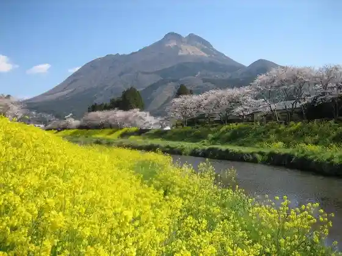
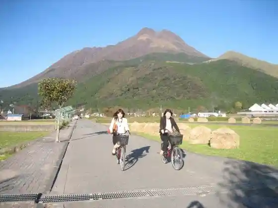

Yufu Gaku
Yufu, Oita · 0977-84-2446 · Official / source link

Yufu Tsurisutoinfomeshon Center YUFUiNFO (Yufuinfo)
Yufu, Oita · 0977-84-2446 · Official / source link
Yufu In Rentasaikuru
Yufu, Oita · 0977-84-2446 · Official / source link

Kanko Tsuji Basha
Yufu, Oita · 0977-84-2446 · Official / source link
Yado Sai Gyoun So
Yufu, Oita · 0977-86-2004 · Official / source link
Seiryu Tohotaru no Yado Takao So
Yufu, Oita · 0977-86-2046 · Official / source link
Ryokan Izumoya
Yufu, Oita · 0977-86-2045 · Official / source link
Ryokan Maruya
Yufu, Oita · 0977-86-2418 · Official / source link
Ryokan Yamashiro Ya
Yufu, Oita · 0977-86-2462 · Official / source link
Tsukahara Onsen Kako no Izumi
Yufu, Oita · 0977-85-4101 · Official / source link
Gin Baths
Yufu, Oita · 0977-86-2367 · Official / source link
Yu no Hira Ueyanagi Ya
Yufu, Oita · 0977-86-2104 · Official / source link
Iyashi no Yado Taka Kachi
Yufu, Oita · 0977-86-2828 · Official / source link
Sanso Matsuya
Yufu, Oita · 0977-86-2151 · Official / source link
Yado Ro Ban Ya
Yufu, Oita · 0977-86-2412 · Official / source link
Oku Yu no Hira Hana Akari
Yufu, Oita · 0977-86-2211 · Official / source link
Otoko Ike (Oike)
Yufu, Oita · 097-582-1111 · Official / source link
Sagiri Dai
Yufu, Oita · Official / source link
Mikoto Pia Ho no Bo no Onsen Kan
Yufu, Oita · 097-582-2864 · Official / source link
Yu Taira Onsen no Ishidatami
Yufu, Oita · 0977-86-2367 · Official / source link
Yambe Ryori Yu no Gaku Iori
Yufu, Oita · 0977-84-2970 · Official / source link
Hashi Ya Ichi Zen Main Shop
Yufu, Oita · 0977-84-4108 · Official / source link
Yufu In Arutejio
Yufu, Oita · 0977-28-8686 · Official / source link
Nobiru Sanso
Yufu, Oita · 0977-85-4768 · Official / source link
Yufu In Onsen Yufuin Sansui Kan
Yufu, Oita · 0977-84-2101 · Official / source link
Dai Kine Sha (Ogosha)
Yufu, Oita · 0977-84-2446 · Official / source link
Kyujitsu no Iin
Yufu, Oita · 0977-84-2324 · Official / source link
Otomaru Onsen Kan
Yufu, Oita · 0977-84-3573 · Official / source link
Yufu In Eki
Yufu, Oita · 0977-84-2446 · Official / source link
CAFE LA RUCHE
Yufu, Oita · 0977-28-8500 · Official / source link
COMICO ART MUSEUM YUFUIN
Yufu, Oita · 0977-76-8166 · Official / source link
Kuchi no Hara (Kuchi no Haru) Fureai Plaza
Yufu, Oita · 097-582-1111 · Official / source link
Kikubatake Park
Yufu, Oita · 0977-86-2367 · Official / source link
Nosambutsu Chokubai Tokoro Yo Damari Shokudo
Yufu, Oita · 0977-84-2270 · Official / source link
Kiri Shima Shrine
Yufu, Oita · 0977-85-2254 · Official / source link
Kurodake
Yufu, Oita · 097-582-1113 · Official / source link
Shirogahara (Jogahara) Oto Campground
Yufu, Oita · 090-2079-5318 · Official / source link
Roadside Station
Yufu, Oita · 0977-84-5551 · Official / source link
U Na Shi Hime Shrine (Unagihimejinja)
Yufu, Oita · 097-582-1304 · Official / source link
Shitan Yu
Yufu, Oita · 0977-84-2446 · Official / source link
Yu no Tsubo Onsen
Yufu, Oita · 0977-84-2446 · Official / source link
Yu no Tsubo Kaido
Yufu, Oita · 0977-84-2446 · Official / source link
Garan Gaku Kako
Yufu, Oita · 0977-85-4101 · Official / source link
Yufu Kawa Gorge
Yufu, Oita · 097-583-2552 · Official / source link
Hebi Etsu Tembo Tokoro
Yufu, Oita · 0977-84-2446 · Official / source link
Kinrin Mizumi
Yufu, Oita · 0977-84-2446 · Official / source link
Hotoke Yamadera (Bussanji)
Yufu, Oita · 0977-84-2714 · Official / source link
Yufu In Eki Atohoru
Yufu, Oita · 0977-84-4678 · Official / source link
Yufu Kogen Gorufu Club
Yufu, Oita · 0977-85-5109 · Official / source link
Nikoruzu Ba
Yufu, Oita · 0977-84-2158 · Official / source link
Kenko Onsen Kan Kuaju Yufuin
Yufu, Oita · 0977-84-4881 · Official / source link
Tsukahara Highlands (Tsukaharakogen)
Yufu, Oita · 0977-85-2254 · Official / source link
Yamanami Haiuei
Yufu, Oita · 0973-73-5505 · Official / source link
Shonai Kagura
Yufu, Oita · 097-582-1304 · Official / source link
Yu Hiradana Ta
Yufu, Oita · 0977-86-2367 · Official / source link
Yufu Yu no Hira Forest Park
Yufu, Oita · 0977-86-2367 · Official / source link
Yufu Yakusho
Yufu, Oita · 097-582-1111 · Official / source link